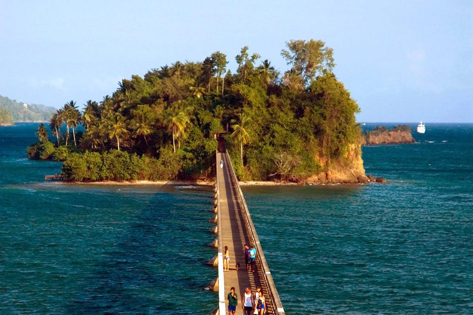
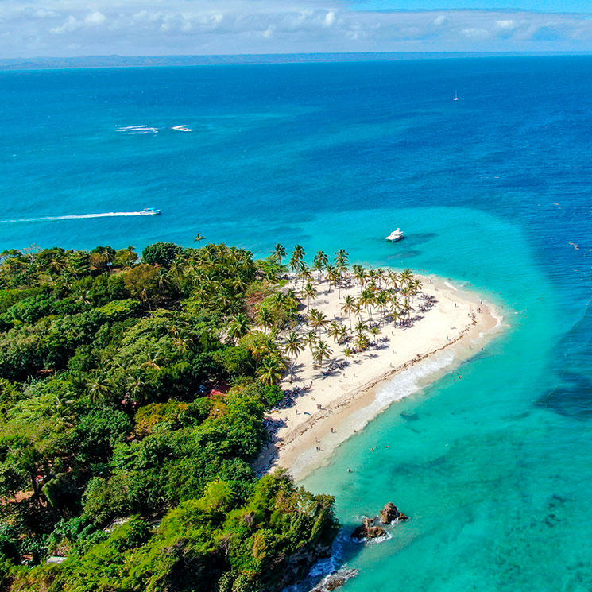
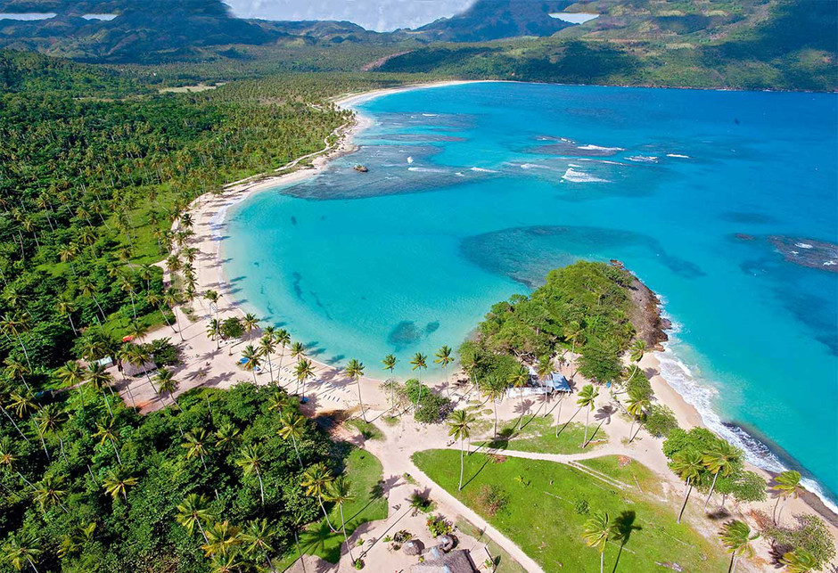
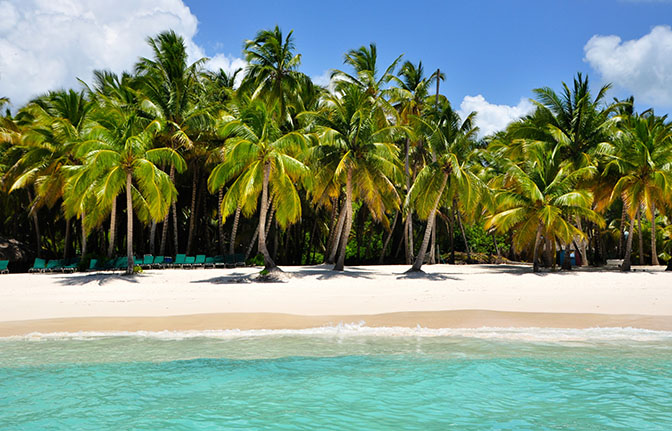
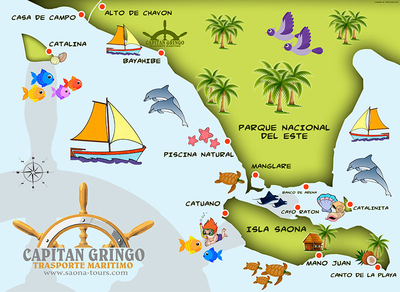
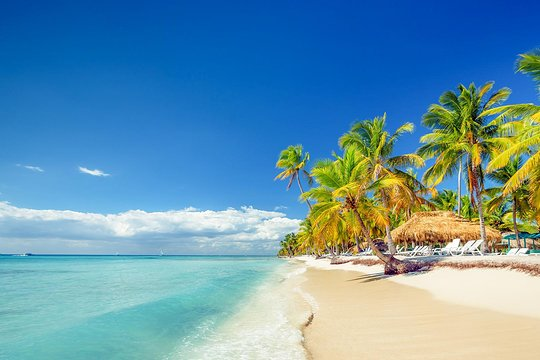
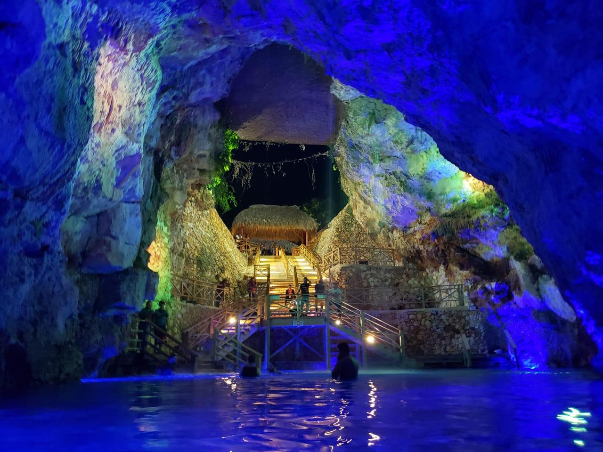
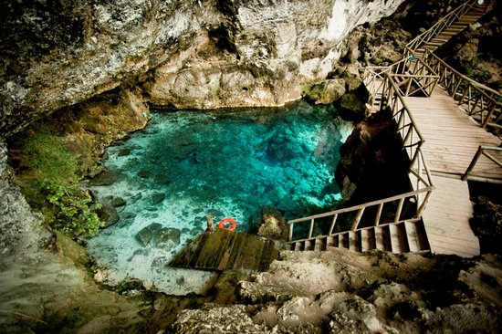

Lugares turisticos
PUNTA CANA.
Punta Cana, el extremo más oriental de República Dominicana, limita con el mar Caribe y con el océano Atlántico.
Es una región conocida por sus 32 km de extensión de playas y aguas claras. El área del Bávaro y Punta Cana se
combinan para formar lo que se conoce como La Costa del Coco, un área con exclusivos centros turísticos con todo
incluido. Es popular por sus tirolesas, el windsurf, el kayak y la navegación.
Península de Samaná

La península de Samaná es una península en la República Dominicana situada en la provincia de Samaná. La
península de Samaná está conectada con el resto del estado por el istmo de Samaná. La península contiene
muchas playas, especialmente en la ciudad de Santa Bárbara de Samaná. Contiene 3 ríos. Las principales
carreteras son la DR-5 y la autopista de Samaná que lleva desde la península a Santo Domingo. La península
también contiene el Aeropuerto Internacional El Catey Samaná y por último, tiene mucha economía agrícola y
turismo.
Excursión a Isla Saona

La Isla Saona se encuentra en el extremo sureste de República Dominicana. Forma parte del Parque Nacional del
Este y es conocida por los mangles, los arrecifes de coral y las playas bordeadas de palmeras, como la
Palmilla. Las aguas poco profundas de la isla albergan estrellas de mar. Mano Juan es un pueblo de
pescadores tranquilo cerca de la Laguna de los Flamencos, con chozas coloridas y un santuario de tortugas.
Al oeste está la Cueva de Cotubanamá, con arte precolombino en rocas
Hoyo Azul


Ubicado dentro del Scape Park, en el área de Cap Cana, este cenote ofrece un refrescante baño en aguas de
manantiales naturales y frescas. Rodeado de un exuberante bosque lluvioso, cuenta con aproximadamente 14
metros de profundidad y se encuentra al pie de un acantilado de piedra caliza de 75 metros de altura
cubierto de vegetación. Tendrás que cruzar un puente colgante y caminar atravesando una infinidad de flora y
fauna, incluyendo un jardín de orquídeas, para acceder a este oasis escondido. Salta en las tentadoras aguas
turquesa o utiliza los escalones para entrar en esta piscina paradisíaca y natural.